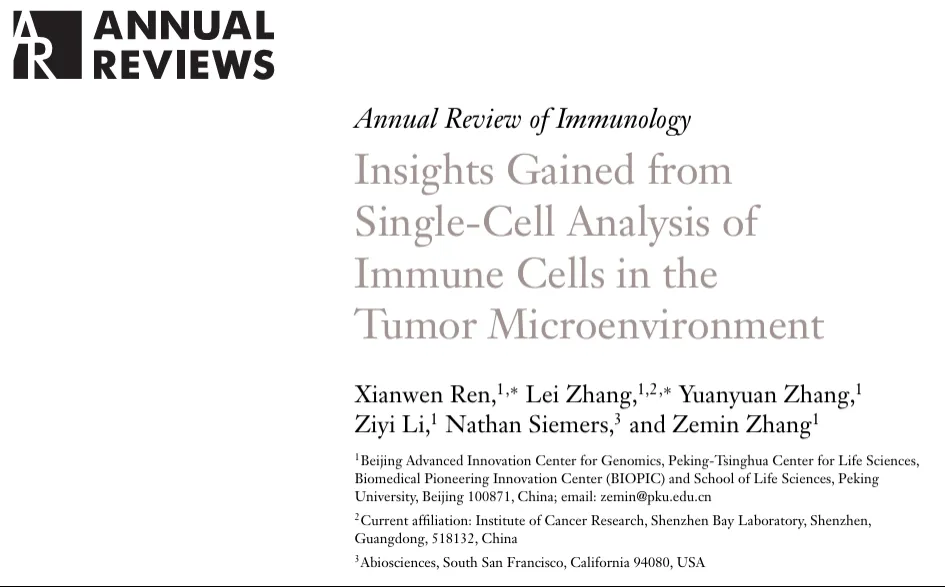
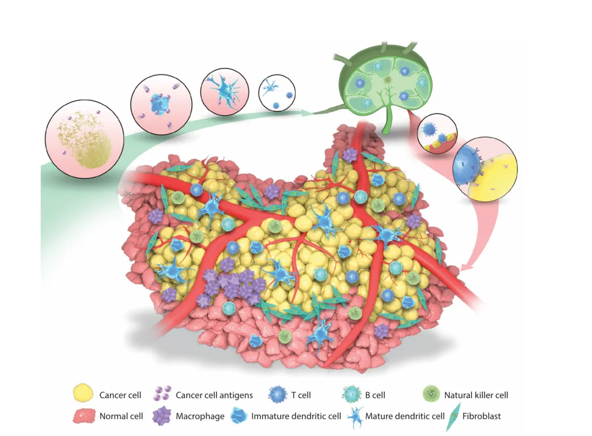
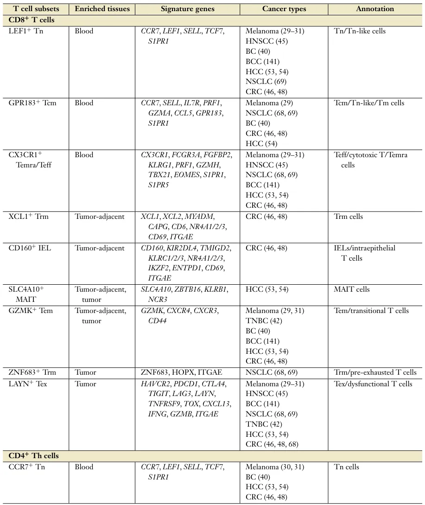
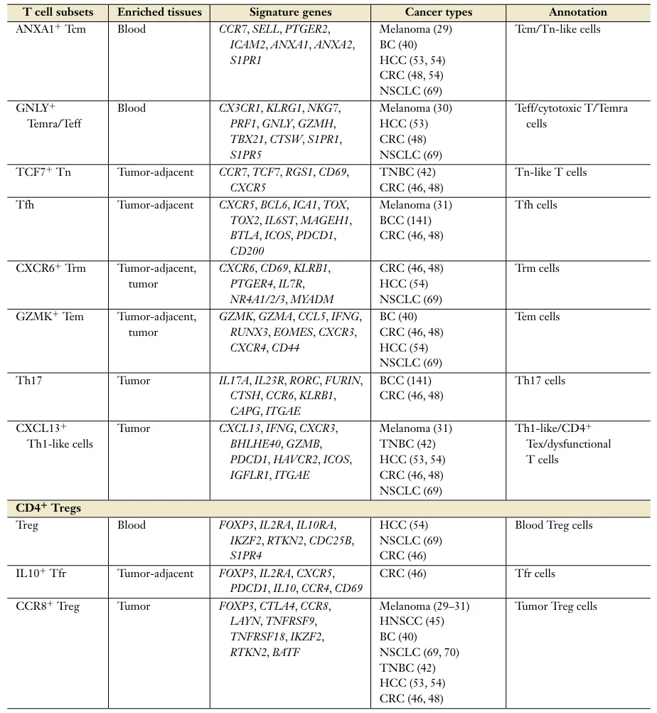
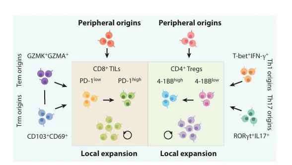
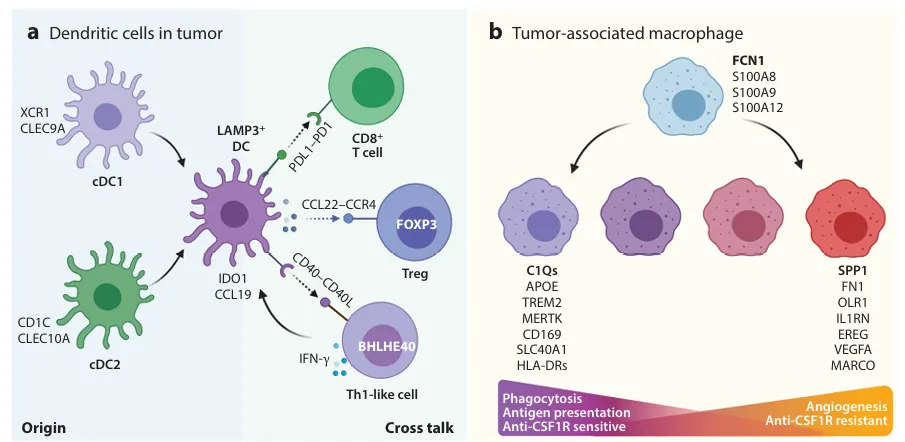
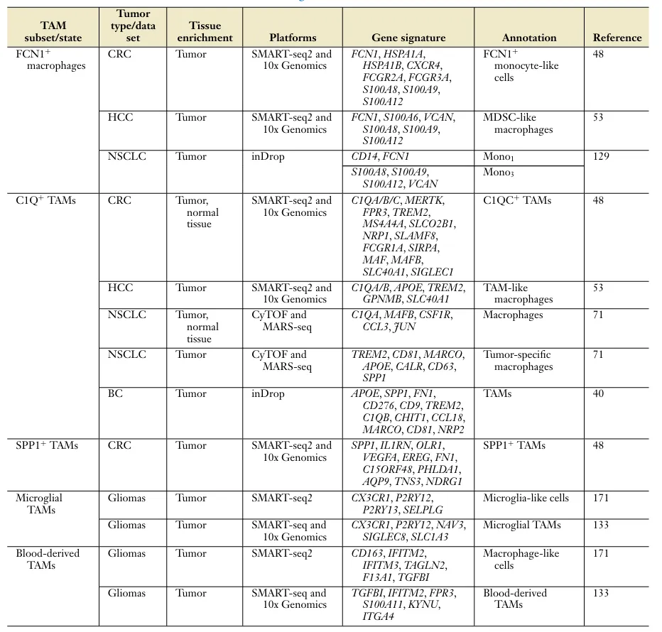
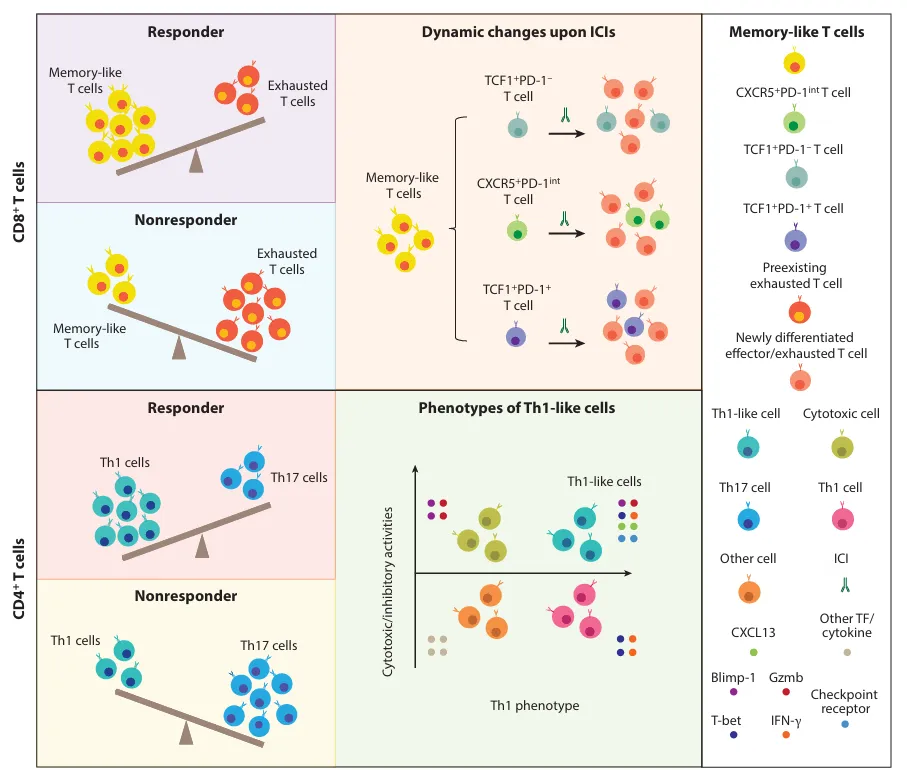

必读综述|肿瘤单细胞+免疫微环境
原文：https://mp.weixin.qq.com/s?__biz=MzAwMzIzOTk5OQ==&mid=2247528088&idx=1&sn=ac4c0e71d5a37e073bf63f65e597541e&chksm=9b3c17c8ac4b9edea5451556ab5bc1ebef98ec3c165f220f608ed1ca40f22ee80eba0f29cf9a#rd 合集：单细胞教程全收录 / 文献速递
写在前面
DOI:10.1146/annurev-immunol-110519-071134
IF:31

今天分享的文献发表在《ANNUAL REVIEWS》上，影响因子为31 ，题目是**“Insights Gained from Single-Cell Analysis of Immune Cells in the Tumor Microenvironment”** 。肿瘤免疫微环境对于识别癌症进展的免疫调节因素和开发癌症免疫疗法至关重要。单细胞RNA测序******（scRNA-seq）** 在解剖肿瘤微环境中的应用为肿瘤浸润免疫细胞的生物学带来了重要的见解，包括它们的异质性、动力学以及在疾病进展和对免疫检查点抑制剂和其他免疫疗法的潜在作用 。这篇文章重点介绍了多种人肿瘤的 scRNA-seq 研究中获得的肿瘤免疫微环境知识的进展，特别强调肿瘤环境中免疫细胞的表型可塑性和谱系动力学的研究。研究还讨论了 scRNA-seq 观察中出现的几个迫在眉睫的问题及潜在解决方案。关于肿瘤单细胞，我们也做过多篇肿瘤单细胞的文章复现：《Nature Communications》| scRNA-seq揭示头颈癌早期转移过程中潜在的免疫逃避机制《Cell》复现|中性粒细胞scRNA-seq图谱阐明抗肿瘤抗原呈递效力代码复现|scRNA-seq绘制透明细胞肾癌的免疫微环境《Cancer Cell》|时空单细胞揭示CRC的PD-1治疗免疫细胞动态 如果大家需要数据库搭建、分析指导 、生信热点全文复现 、自测数据个性化分析 辅导，欢迎联系客服微信[Biomamba_yunying]研究背景
** **癌症 是一种复杂的基因改变疾病，由于丧失生长控制以及与人体（包括免疫系统）的适应不良串扰，它威胁着人类健康。虽然免疫系统可以通过其先天性和适应性机制保护宿主免受大多数病原体的感染，但其在根除癌症中的作用可能会因肿瘤新抗原的免疫编辑、免疫抑制髓系细胞的募集以及控制 T 细胞反应的 T 细胞检查点通路的劫持而受到损害。了解肿瘤免疫逃逸的精确细胞和分子机制仍然是进一步改进目前的免疫疗法或开发新的治疗途径的关键任务。
作为肿瘤免疫的关键参与者，CD8 +T 细胞 可以在识别新抗原时直接识别和杀死癌细胞，还可以进行其发育谱系和状态的调整（Fig.1），CD4 +T 细胞 ，包括高度抑制的 FOXP3 调节性CD4+ T 细胞，还可以协调不同的免疫反应，以增强或抑制对癌细胞的免疫力。树突状细胞****（DC） 通过呈递癌症抗原和分泌促炎和抗炎细胞因子和趋化因子来启动和调节针对肿瘤的先天性和适应性免疫反应。巨噬细胞 通过刺激血管生成、促进炎症和抑制抗肿瘤免疫来促进癌症发生、恶性进展甚至转移 。

Fig.1
** scRNA-seq **技术 的快速发展为剖析肿瘤浸润免疫细胞的异质性及其与肿瘤中各种正常和异常细胞类型的相互作用提供了强大的工具。使用 scRNA-seq许多癌症的肿瘤浸润免疫细胞的数量和质量已以前所未有的分辨率得到解析，为肿瘤微环境中免疫细胞的组成、异质性、动力学和调节带来了新的知识和深入的见解。这些研究还提出了需要关注的新基因靶点以及有临床意义的生物标志物。
这篇综述中，作者重点介绍了肿瘤浸润性 T 细胞、DC 和巨噬细胞，并讨论了它们的基因表达异质性、癌症类型之间的组成差异、细胞动力学以及通过 TCR 测序、线粒体突变追踪和 RNA 速度分析揭示的细胞起源，以及它们在肿瘤免疫和对免疫治疗的反应或耐药性中的潜在作用。
主要内容****
- 1. 通过scRNA-seq研究肿瘤浸润免疫细胞****
肿瘤浸润免疫细胞研究目前使用两种类型的 scRNA-seq 技术：一种基于板（ 将单个细胞分选到板中，并在孔中制备 RNA 文库）和另一种基于液滴 （将单个细胞包裹在油乳剂内的水滴中）。基于板的 scRNA-seq 方法包括SMART-seq2，其脱落率低，与大量 RNA-seq 相似，因此可以全面表征更广泛的基因表达谱。然而，与基于液滴的技术相比，基于板的 scRNA-seq 成本高且细胞通量低，以10x Genomics为代表的基于液滴的 scRNA-seq 可以在一次实验中获得数千个细胞的 scRNA-seq 数据，而基于板的技术通常仅限于数十到数百个细胞。然而，基于液滴的 scRNA-seq 有其自身的技术缺陷，即使是中等表达的基因也容易丢失。尽管这两种类型的技术各有优缺点，但它们都已成功应用于肿瘤微环境表征。
最近的肿瘤浸润性免疫细胞研究的另一个特征是，在每个研究中收集样本（细胞）和选择相关对照组织的策略不同。要么是肿瘤微环境中的所有细胞，或者是CD45+免疫细胞，特别是CD45+CD3+T细胞已经被富集，然后进行scRNA测序。这种不同的免疫细胞富集方法引入了研究特异性的偏差，由于不同的细胞，可能会干扰后续的整合分析，认知组成及每个患者的捕获率和最终的细胞分辨率。 不同研究中细胞的富集将导致scRNA-seq测序结果的不同。尽管存在如此多的差异，但研究者已经对肿瘤浸润免疫细胞的癌症类型进行了许多一致的生物学观察，为肿瘤免疫逃逸的潜在机制提供了重要的启示。
- 2.肿瘤浸润性CD8 +T 细胞的特征是功能失调的T细胞和效应T细胞的混合群。****
最近的肿瘤浸润性T细胞研究确定了不同的T细胞亚群。CD8 +T细胞可能处于不同的功能障碍状态，其细胞毒性功能降低的现象被称为T细胞衰竭。肿瘤微环境中功能失调或耗竭T细胞的特征是抑制性受体的表达升高，包括PD-1、CTLA-4、TIM3、TIGIT和LAG3 。同时有一小部分已耗竭的CD8+T细胞显示增殖标志物MKi67的高表达。基于TCR的肝癌、肺癌和结肠直肠癌的跟踪显示，许多增殖耗竭的CD8+T细胞的耗竭表型都具有相同的TCR序列（配对的α和β链），提示它们有相同的起源。诱导衰竭的因素很有可能是肿瘤微环境中的各种抗原因子。
ScRNA-seq发现，常见CD8+T细胞的另一个特征是GZMK的基因高表达。GZMK在免疫反应中发挥重要作用，能够识别并裂解带有**“非自身”**抗原的靶细胞， 这些GZMK+T细胞表达很少或不表达T细胞衰竭相关标记物。不同肿瘤类型中的GZMK+T细胞的广泛存在表明其在肿瘤免疫中发挥了作用。深度测序的肝、肺和结直肠癌的TCR分析揭示了GZMK和耗竭T细胞之间的紧密联系，表明这些T细胞可能靶向相同的抗原。GZMK+T细胞亚群有CD45RO+且IFNG和PRF1均有高表达，被认为是 CD8 效应记忆 T 细胞。研究者们发现肿瘤在肿瘤微环境中效应记忆和耗竭 T 细胞比率可能是患者生存预后标志物和对免疫疗法反应的预测标志物。


Table.1
3.通过TCR 来研究肿瘤浸润性CD8+T细胞的动力学
TCR 的多样性为识别 T 细胞克隆和追踪克隆群的动力学提供了天然分子标记物。scRNA-seq 技术，如 SMART-seq2 和 10x Genomics 5′+VDJ 方法，能够进行T细胞鉴定，进而进行动力学研究。四种类型的T细胞动力学可以通过STARTRAC进行定量评估，包括克隆扩增的程度、转录组状态的倾向、在特定组织中的富集、以及迁移到其他组织的倾向。
科学家们在多种肿瘤中都发现GZMK+ 效应记忆T细胞和耗竭的 CD8+ T 细胞，表明 GZMK+效应记忆 T 细胞可能分化或将其表型转变为耗竭状态。GZMK+效应记忆T细胞和耗竭T细胞之间的一个显著区别是它们在组织偏好和跨组织的流动性方面的差异。GZMK+效应记忆CD8+T细胞在肿瘤和癌旁正常组织中都富集，而耗竭T细胞只在肿瘤中富集。相比于GZMK+CD8+T细胞TCR高频率的共享，外周血与肿瘤中T细胞克隆共享不太频繁，暗示了肿瘤免疫逃逸的机制。
**4.**通过对特定组织的区域免疫塑造肿瘤微环境。
****越来越多证据表明，不同解剖来源的肿瘤T细胞特性不同。 在肝细胞癌、非小细胞肺癌 或结直肠癌患者 T 细胞的 scRNA-seq 研究中，观察到三种癌症类型的外周血中都有相似的 T 细胞组成 ，但不同组织来源的肿瘤会出现不同的 T 细胞亚群，例如MAIT细胞在肝细胞癌中显著富集，穿孔素和多种颗粒酶高表达。然而，在非小细胞肺癌中 ，很少发现 MAIT 细胞。在结肠直肠癌中 ，只能观察到CD6+CD8+T细胞亚群，其特征是IFNG、GZMB和PRF1的高表达；PDCD1、CTLA4和HAVCR2的低表达；且TIGIT和LAG3表达水平相对较高；TCR与耗竭T细胞共享水平也较高。在乳腺癌中 ，肿瘤微环境中大量存在γδT细胞。其中一些肿瘤特异性的T细胞亚型与患者的预后相关。例如，CD8+ZNF683+T细胞亚群与非小细胞肺癌患者更好的生存相关，而这些组织-区域T细胞亚群的产物可能与免疫治疗的成功或失败有关。
5.scRNA-seq 揭示肿瘤浸润 CD8+ T 细胞的起源
** T细胞起源于胸腺，在淋巴结中成熟，通过血液和淋巴管迁移，并在靶组织中发挥作用，** 多种肿瘤类型中耗竭CD8+T细胞和GZMK+效应记忆T细胞的高度扩增表明，局部扩增是肿瘤浸润CD8 +T细胞的主要来源 。肿瘤邻近组织中的GZMK+效应记忆CD8+T细胞及耗竭T细胞表明肿瘤浸润性CD8+T细胞也可能来源于GZMK效应记忆T细胞的迁移，随后过渡到耗竭状态。
研究者在多种癌症类型中观察到肿瘤及其邻近组织GZMK+效应记忆CD8+T细胞的富集，在肿瘤中除了局部扩增外，这些细胞也能浸润到肿瘤（Fig2）。在多种癌症类型中，GZMK+效应记忆CD8+T细胞与外周血中富集的CD8 +CX3CR1+T细胞 共享TCR表型。这三个亚群的T细胞克隆，尽管频率较低，但已经在多种癌症类型中被发现。这些克隆揭示了肿瘤浸润效应记忆或耗竭T细胞的来源，低频率可能导致对肿瘤新抗原的系统免疫应答失败，从而导致肿瘤免疫逃逸。
基于scRNA-seq的研究还表明，组织驻留的T细胞是肿瘤浸润T细胞的重要来源 。在肺中，与 GZMK+效应记忆 T 细胞相比，以 ZNF683、ITGAE 和 CD69 高表达为特征的 T 细胞与耗竭的 T 细胞共享更多的TCR 。最近对Covid-19 患者的scRNA-seq研究证实了肺内ZNF683 +T细胞 的存在及其在消除病毒感染的可能作用，证实了该亚群的肺驻留性质及其在维持肺稳态中的作用。ZNF683+T细胞之间的TCR共享、T细胞耗竭，以及ZNF683+T细胞高浸润的肺癌患者较好的生存优势，强调了组织驻留T细胞作为抗肿瘤药物的重要性。然而，组织驻留T细胞的抗肿瘤作用在不同的组织和T细胞亚型之间有所不同 。
以上研究表明，T细胞的来源中自我扩增是主要来源，GZMK +效应记忆T细胞从邻近组织迁移是主要外部来源，以及组织驻留T细胞形成第三来源类型，但因肿瘤类型而异。这三种机制的相对贡献可能与肿瘤微环境的免疫状态有关。

Fig.2
**6.******调节性T细胞（CD4+Tregs）与肿瘤浸润性CD8 +T细胞的特性比较。
尽管在不同癌症类型的肿瘤浸润性CD8+T细胞模式一致，但CD4+T细胞更为复杂。整体来看，CD8+T细胞比CD4+T细胞具有更高的克隆扩增，与肿瘤浸润 CD4 +T 细胞的低扩增相比，肿瘤驻留的 Treg肿瘤浸润性 CD8 T 细胞的类似，具有较高的增殖标志物。除克隆扩增外，肿瘤驻留Treg也表现出与耗竭的CD8 +T细胞相似的表型 ，高表达抑制性受体，同时这些细胞局限于肿瘤。在4-1BB的分选中，肿瘤驻留的Treg可分为两个亚组，其中一个亚组表达的抑制性受体少于另一个亚组，类似于肿瘤中GZMK+效应记忆CD8+T细胞和耗竭T细胞之间的关系。然而，这种相似性在血液中富集的Treg中并不存在，与激活的Treg相比，这些抑制性Treg相关的基因表达水平较低，包括FOXP3、CCR8和IL2RA。肿瘤组织中富集的Treg，特别是**4-1BB +**亚群，与非小细胞肺癌患者的不良预后有关，强调了其免疫抑制作用 。
7.** 肿瘤微环境中常规*T 细胞的新兴模式。***
** ** 与Treg和CD8+T细胞相比，不同癌症类型患者的scRNA-seq研究中，常规T细胞（Tconvs ）在基因表达和TCR库方面表现出更大的异质性。例如Th1-like CD4+T细胞的一个特定子集在MSI的肿瘤微环境中显著富集，在结直肠癌患者却没有。这类CD4+T细胞亚群的特征是CXCL13和BHLHE40的阳性以及IFNG和GZMB的高表达，表明它们的效应功能和调控作用。这些CXCL13+BHLHE40+T细胞被克隆扩增，并与CD4+GZMK+辅助T细胞共享TCRs。这些Th1样细胞在MSI患者中的富集提示他们的免疫效应。
**8.**肿瘤微环境中 lamp3+的免疫调节作用。
scRNA-seq不仅分析了肿瘤浸润T细胞，而且也能够研究髓系微环境及其与肿瘤浸润T细胞的相互作。树突状细胞作为专业的抗原提呈细胞，是诱导和维持抗肿瘤免疫的重要组成部分。 传统上，树突状细胞可以分类为CD11C+常规树突状细胞(cDCs)和浆细胞样树突状细胞(pDCs)，其中cDCs进一步分离为CD141+1型cDCs(cDC1s)和基于细胞表面标记物的CD1C+(cDC2s)，然后将抗原提呈给T细胞。研究表明，cDC1s经历了toll样受体(TLR)诱导的免疫成熟过程，以及Ccr7和Cd40的上调。
LAMP3是成熟树突状细胞的标志物之一。在DC激活和成熟过程中，LAMP3的表达会上调，且其上调与DC细胞的抗原呈递能力增强有关。 对于非小细胞肺癌和肝细胞癌的ScRNA-seq分析显示，LAMP3+树突状细胞倾向于表达更多的趋化因子、细胞因子和共刺激/抑制配体，它们调节肿瘤浸润性T细胞的功能，使其高表达相应的T细胞受体（Fig.3）。从机制上看，LAMP3+树突状细胞的PD-L1的表达可以被Axl下调，而被CD40和TLR-3上调；而IL-12的表达可以被IFN-γ和IL-4的下调。综上所述，通过scRNA-seq可鉴定多种癌症类型中的LAMP3+树突状细胞，揭示了一种可以调节特定T细胞亚群功能和浸润的共同机制。
-

Fig.3
9.肿瘤相关巨噬细胞的表型可塑性及其免疫学意义。
肿瘤相关巨噬细胞(TAMs)是肿瘤免疫微环境的另一个主要组成部分， M1型巨噬细胞促炎，但M2型巨噬细胞通过其抗炎功能促进肿瘤生长。scRNA-seq揭示了TAMs在癌症患者中的异质性。在结直肠癌中，TAMs表现出M1和M2标记物的混合表达。表明TAMs的功能和表型在癌症中存在显著差异，不能简单地用M1/M2模型来概括**。TAMs具有复杂性和动态性，其在肿瘤微环境中的极化是一个连续的、动态的过程，表型和功能可以随着肿瘤进展而变化。** 例如，TAMs可能同时表达M1和M2的特征，或者在不同阶段表现出不同的极化状态。
另一个TAM亚群的特征 是FCN1、VCAN、S100A8、S100A9和S100A12的高表达，并在肝、肺和结直癌中被鉴定。与C1Q+TAMs相比，FCN1+TAMs也在肿瘤邻近组织中富集。在表型上表现出血源的经典单核细胞(CD14和FCN1)和巨噬细胞(CD68)的特征，并且它高表达中性粒细胞相关基因，包括S100A8、S100A9和CSF3R。说明这一特定亚群起源于单核细胞，并且在肿瘤中单核细胞成熟为巨噬细胞的过程中处于中间状态。
通过scRNA-seq，在结直肠癌中发现另一个TAMs亚群中SPP1高表达。也在肺癌和乳腺癌中检测到SPP1的表达 。C1q是补体系统的一个关键成分，通常作为特定亚群的组织驻留巨噬细胞和TAMs的标记物。与C1Q+TAMs相似，SPP1+TAMs更多富集于肿瘤组织。其特征是血管生成相关基因的高表达。且能够对CSF1R阻断治疗具有耐药性，对肿瘤进展有影响。在SPP1+和C1Q+TAMs之间也可以识别出共同的基因标记，如GPNMB，它与肝癌的低生存率相关。不同于C1Q+TAMs、基于配体-受体和基于TCGA的分析表明，SPP1+TAMs与癌症相关的成纤维细胞和内皮细胞密切相关，并且它们在调节肿瘤微环境的状态中发挥着不同的作用。最近一项关于肾透明细胞癌的研究表明，高水平的IL-8和骨髓细胞中抗原呈递机制的下调，及PD-L1阻断对转移性肾透明细胞癌和尿路上皮癌患者的疗效降低相关，这强调了SPP1+TAMs对免疫检查点抑制影响的重要性（Table 2）。

Table.2
- 10. 通过scRNA-seq深入了解癌症免疫疗法。
ScRNA-seq方法被用于识别与癌症免疫治疗的应答或耐药性相关的单个标记物或特定的细胞类型亚群 （Fig.4）。在基底细胞癌和鳞状细胞癌中介导抗肿瘤活性方面，招募新的T细胞比恢复耗竭T细胞更重要。越来越多的证据表明，来自邻近甚至外周组织的T细胞对于对癌症免疫治疗非常重要。小鼠研究表明了CXCR5/TCF1 +CD8+T细胞 亚群会对免疫检查点抑制。这种T细胞群被认为具有祖细胞或干细胞样表型，表达低水平的PD-1和TIM-3抑制受体，自我更新和分化为最终TCF1-耗竭T细胞，并高表达抑制性受体。表型上，这些CD8+T细胞群与肿瘤和邻近组织中驻留的CD8 +GZMK+效应记忆T细胞 或肿瘤中MKi67 +增殖性CD8 +T细胞类似，表明他们是同一个效应记忆起源 。当TCF1+T细胞耗竭时，在小鼠模型中仍能观察到免疫检查点抑制肿瘤生长，这表明这种CXCR5/TCF1+CD8+T细胞在这些模型中，并不是对免疫治疗应答的唯一介质。除了效应记忆T细胞，组织驻留记忆和外周T细胞是肿瘤浸润T细胞恢复和补充的重要途径，最近的研究表明了肺驻留记忆T细胞和对癌症免疫治疗外周免疫反应的重要性。
除了细胞毒性CD8+T细胞，CD4 +T细胞 对于有效抗肿瘤免疫和免疫治疗应答具有重要意义。如上所述，Th1样细胞在免疫治疗敏感的MSICRC患者中显著富集，而Th17细胞在免疫治疗耐药的MSS患者中富集。在肿瘤微环境中，Th1样细胞和Th17细胞之间的平衡也与前列腺癌对免疫检查点抑制剂的应答性有关，其中Th1群体与更好的应答相关，而Th17群体与耐药性相关。

Fig.4
11.scRNA-seq 联合空间转录组挖掘肿瘤浸润性免疫细胞的研究能力。
** scRNA-seq为多种癌症类型的细胞和分子景观提供了重要见解，但在组织解离过程中丢失了细胞的空间关系信息。空间转录组学的出现，以及研究细胞间相互作用的技术，为补充scRNA-seq提供了有效手段，以剖析肿瘤微环境的组成和结构。** 例如scRNA-seq与空间转录组学的结合被应用于胰腺癌和人类鳞状细胞癌的研究，揭示了肿瘤细胞与免疫细胞之间的相互交流。同时也解答了肿瘤细胞的定位和三级淋巴结构。 空间转录组学还揭示肿瘤浸润性CD8+T细胞倾向于与Treg共定位，为其表型相似性提供了空间解释，并暗示了彼此之间潜在的调控关系。CSOmap的计算模型显示，CD8+T细胞可以通过CCL4-CCR8来募集肿瘤驻留的Treg细胞，与人鳞状细胞癌中联合scRNA-seq和空间转录组的观察一致。同时也在最近一项关于黑色素瘤的研究中得到了支持。
总结讨论
scRNA-seq在肿瘤微环境的研究中具有重要意义，它揭示了肿瘤浸润免疫细胞的表型异质性、起源和动态变化。这些发现不仅有助于理解肿瘤免疫，还为改善癌症免疫治疗提供了新的视角。同时也能够进行生物标志物的预测和新治疗策略的开发。

如何联系我们

 公众号后台消息回复不便，这里给大家留一下领取资料及免费服务器(免费两周学习版上架啦~)的微信号 ，方便各位随时交流（别问在么，添加时直接说来意）。同时我们也构建了交流群矩阵，欢迎大家入群讨论。
公众号后台消息回复不便，这里给大家留一下领取资料及免费服务器(免费两周学习版上架啦~)的微信号 ，方便各位随时交流（别问在么，添加时直接说来意）。同时我们也构建了交流群矩阵，欢迎大家入群讨论。
大家可以阅读完这几篇之后添加给生信入门初学者的小贴士 如何搜索公众号过往发布内容
已有生信基地联系方式的同学无需重复添加

 您点的每个赞和在看，我都认真当成了喜欢
您点的每个赞和在看，我都认真当成了喜欢